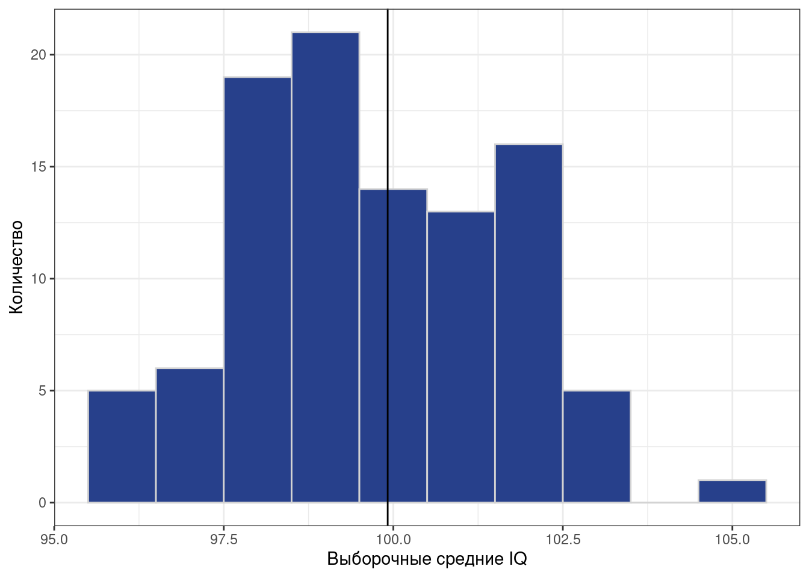

Мы оказываемся в сложной, но интересной ситуации. Мы хотим знать что-то про генеральную совокупность — значение некоторого параметра. Но мы его никогда не узнаем, потому что не можем работать с целой генеральной совокупностью. Нам остаётся работать только с выборочной совокупность (выборкой) и опираться на статистические данные, которые мы собираем на ней.
Выборка извлекается из генеральной совокупности случайным образом, поэтому что там именно — с точки зрения данных — в нашей выборке будет нам также неизвестно. Отсюда происходят два ключевых свойства статистических данных — неопредлённость и вариативность.
Неопределённость нам говорит о том, что мы не знаем, что именно мы получим в результате наших измерений для конкретной выборки. В том числе потому, что мы работаем на просторах случайных величин.
Вариативность означает, что наши данные будут различатся ещё и от респондента к респонденту. И между выборками тоже. Здесь и ошибка измерения, и различные смешения и ещё куча всего.
В итоге что мы имеем: так как нам не доступны истинные значения параметров, придётся использовать оценки этих параметров.
24.1 Точечные оценки
Параметр обычно обозначается греческой буквой. Пусть у нас есть некоторый параметр генеральной совокупности \(\theta\). Его аналогом на выборочной совокупности является его точечная оценка\(\hat \theta\). Точечная она, потому что представляет собой некоторое одно число. Таким образом, это наиболее компактный способ составить представление о значении параметра. По своей сути она, на самом деле, она является функцией от результатов наблюдений:
Что это значит? То, что на разных выборках эта оценка может различаться. Возьмем для примера такой параметр как среднее значение. Предположим, что мы исследуем интеллект, и наша генеральная совокупность представлена таким набором наблюдений:
nrow(iq)
[1] 10000
head(iq)
# A tibble: 6 × 2
id IQ
<int> <dbl>
1 1 120
2 2 102
3 3 99
4 4 103
5 5 91
6 6 116
tail(iq)
# A tibble: 6 × 2
id IQ
<int> <dbl>
1 9995 93
2 9996 79
3 9997 86
4 9998 80
5 9999 70
6 10000 112
Так как мы предположили, что это генеральная совокупность, то мы можем посчитать истинное значение параметра \(\mu\). В реальной жизни мы этого сделать не можем!
mean(iq$IQ)
[1] 99.8459
Вполне ожидаемое значение1. Теперь попробуем наизвлекать выборок человек по 50 и посчитать оценки среднего (выборочные средние)\(\hat \mu\) на них:
means <-numeric()for (i in1:100) { means[i] <-mean(sample(iq$IQ, 50, replace =FALSE))}ggplot(NULL, aes(means)) +geom_histogram(binwidth =1, fill ='royalblue4', color ='lightgray') +geom_vline(xintercept =mean(iq$IQ)) +labs(x ='Выборочные средние IQ',y ='Количество')

Наблюдаем, что иногда мы при подсчёте оценке параметра попадаем близко к истинному его значению, иногда промахиваемся. Собственно, как раз об этом неопределённость и вариация.
24.1.1 Метод моментов
Чтобы получить точечные оценки параметров, используются разные методы в зависимости от конкретной модели анализа. Сейчас мы познакомимся с самым простым — методом моментов.
Само название метода отсылает нас к обсуждению характеристик распределений случайных величин. Мы говорили о том, что распредления характеризуются их моментами. В методе моментов есть три этапа:
устанавливается связь между оцениваемым параметром и моментом распределения
истинный момент заменяется на выборочный — получается оценка.
Для примера разберём всё тот же датасет с IQ. Мы знаем, что распределение баллов IQ подчинается нормальному закону. Поэтому в качестве параметра «среднее значение коэффициента интеллекта» генеральной совокупности можно использовать математическое ожидание:
\[
\mu = \mathbb{E}X
\]
Выборочным аналогом математического ожидания является выборочное среднее:
\[
\hat \mu = \frac{1}{n} \sum_{i=1}^n x_i
\]
И это, собственно, всё. Если вы хотя бы раз анализировали данные, вы имплицитно пользовались этим знанием. Просто, скорее всего, не задумывались, что это так работает. :)
24.1.2 Метод максимального правдоподобия
24.1.3 Bootstrap
24.1.4 Свойства точечных оценок
Так как точечные оценки всё же оценки, мы можем и промахнуться мимо истинного среднего — это мы наблюдали на гистограмме. Поэтому нам надо предъявить определённые требования к точечным оценкам. Их три: несмещённость, состоятельность и эффективность.
24.1.4.1 Несмещенность
Несмещённость выражает следующую идею: когда мы рассчитываем выборочную оценку, мы должны как можно ближе попадать в истинное значение параметра.
\[
\forall n \; \mathbb{E} \hat \theta = \theta, \quad (\mathbb{E}\hat \theta - \theta) \rightarrow 0,
\] где \(n\) — объём выборки, \((\mathbb{E}\hat \theta - \theta)\) — смещение.
Слева представлено требование несмещённости при любом объёме выборки, а справа — ассимптотической несмещённости.
24.1.4.1.1 Проверка среднего как оценки математического ожидания на несмещенность
Содержательно эта запись нам говорит следующее, что при неограниченном росте мощности выборки наша оценка стремится к истинному значению параметра. Может быть, такая формулировка не совсем точна математически, но позволяет представить, что происходит.
24.1.4.3 Эффективность
Эффективность точечной оценки определяется достаточно просто. Так как оценка параметра — это случайная величина, но у неё есть дисперсия. Чтобы оценка была эффективна, её дисперсия должна быть минимальной:
\[
\sigma^2_{\hat \theta} = \min
\]
Пример несмещённой, состоятельной и эффективной оценки — это выборочное среднее для оценки математического ожидания нормально распределённой величины. Именно то, что мы и делали в примере применения метода моментов.
24.2 Интервальные оценки
Кроме самого значения оценки, необходимо определить качество этой оценки, иначе говоря — её точность. Для этого используется такая величина как надёжность:
Такая форма оценки называется интервальной оценкой параметра, так как мы указываем интервал, в котором находится истинное значение с определённой вероятностью.
Такая форма оценки даёт исчерпывающую информацию о параметре: мы знаем (1) интервал, в котором находится значение параметра генеральной совокупности, а также (2) надёжность, с которой выбранный интервал накрывает это значение.
Значение надежности \(\gamma\) может быть выбрано произвольно, но обычно оно близко к единице. Однако необхожимо помнить, что чем выше надёжность, тем шире границы интервальной оценки.
24.2.1 Стандартная ошибка
24.2.1.1 Почему \(\text{se}(X) = \frac{\text{sd}(X)}{\sqrt{n}}\)
\(theta_\min\) и \(\theta_\max\) — границы доверительного интервала, \(\gamma\) — доверительная вероятность. На практике её значение чаще всего принимается равным \(0.95\).
Алгоритм определения интервальной оценки следующий:
Найсти статистику \(\zeta(\theta)\), связанную с оцениваниемым параметром, закон распределения которой известен \(f(\zeta)\).
Определить значения \(\zeta_\min\) и \(\zeta_\max\), в пределах которых статистика находится с вероятностью \(\gamma\).
Зная связь \(\zeta(\theta)\) перейти к границам \(\theta_\min\) и \(\theta_\max\).
Разберемся с этим на примере построения доверительного интервала для генерального среднего.
Первая задача — найти статистику. Мы воспользуемся тем, что за нас поработали учёные-статистики и сказали, что вот такая вполне подойдёт:
\[
t = \frac{\bar x - \mu}{s}\sqrt{n-1},
\]
где \(t\) — значение статистики, \(\bar x\) — выборочное среднее, \(\mu\) — генеральное среднее, \(s\) — выборочное стандартное отклонение, \(n\) — объём выборки.
Известен ли закон её распредления? Да. Эта статистика подчинается \(t\)-распределению (распределению Стьюдента). Оно похоже на нормальное, но хвосты у него повыше:
Теперь надо сформулировать вид интервальной оценки для генерального среднего. Путем арифметических преобразований формулы выше мы имеет следующее:
Видим на ней наш доверительный интвервал и значения \(t_\alpha\) и \(-t_\alpha\). Сама \(\alpha\) обозначает вероятность выхода за границы доверительного интервала. Осталось всё это высчитать в числах, и получить границы доверительного интервала.